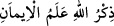
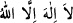
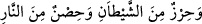
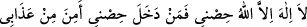
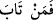
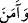
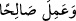

amele devam ettiği takdirde geçerli olduğunu gösterir. Zira bunlara devam etmeyip
terkeden kimse felâh bulamaz. Kemâlden sonra noksanlığa düşmekten (veya ikram ve
ihsan’dan sonra mahrûmiyetten) Allah’a sığınırız. Âhiret ehline gereken, amel-i sâlih ve
evrâda devam etmektir. Çünkü dereceleri kazanmak, fayda ve bereketleri celb etmekte
sâlih amelin rolü büyüktür. Yine saâdet ehli için dünya ve ahirette, şakâvet ehli için de
sadece dünyada menfaatlere sebep olur; zira onlar mevki, makam, mal, mülk gibi
dünyevî amaçlarla amel işlerler. Şeytana, küfründen önceki uzun ömrü içinde yaptığı
ibâdetin karşılığı verilmiş ve ibâdet ve amelinin eserini dünyada görmüştür.
O halde, îmanla çalışmak ve sâlih amel işlemek gerekir.
Hikâye olunur ki: İbrâhim b. Edhem (k.s.), ücretsiz hamama girmekten men olununca;
âh u vâh edip dedi ki: İnsan, şeytan evine ücretsiz girmekten men olunursa; Rahmân’ın
evine bir şeyi olmadan nasıl girebilir. En faziletli amel, tevhîd ve şerefli arşın Rabbı’nı
zikretmektir. Bir adam batıdan doğuya mal infak ederek, bir diğeri de doğudan batıya
Allah yolunda kılıçla cihad ederek yürüse; Allah’ı zikredenin durumu bunlardan daha
üstündür. Hadiste “
(Allahı zikretmek, îmanın alemidir)”[130]
buyrulmuştur. Çünkü müşrik,
“__WORD__ (Allah’tan başka ilâh yoktur)” dediğinde müslüman olduğuna ve nifaktan
berî olduğuna hükmedilir. Zira münafıklar Allah’ı çok az zikrederler. “
(Ve şeytana karşı bir sığınak, cehennem ateşine karşı bir kale ve siperdir.” Nitekim
el-Kelimâtü’l-Kudsiyye’de hadis şöyle rivâyet edilmiştir:
(Lâilâhe illah, benim kalemdir. Kim, benim kaleme girerse, azâbımdan emin olur.)
[131]
et-Te’vîlâtü’n-Necmiyye’de der ki: “__WORD__ Kim ki muhabbet ve sâdık bir taleble
Allah’ın huzuruna dönüp O’na tevbe eder; “__WORD__ Peygamber (s.a.)’in, Allah katından
getirdiklerine îman eder;
“__WORD__ sâlih amel işler yâni kendisini Allah’a götüren, sahih delile dayanan,
kuvvet ve kudret sâhibinin usûl ve easslarına uygun sâlih amel işlerse, o kimseler felâha
eren ve kurtulan kimselerden olması umulur. Onlar ki nefsinin esiri olmaktan kurtulmuş,
benlik (enâniyet) boyunduruğundan kaza ve engin hüviyet genişliğine ulaşmışlardır.
Ebû Dâvûd, Zekat, 34; Tirmizî, Kıyamet, 30; İbn Mâce, Zühd, 2; Müsned, V, 183.
Müslim, Cennet, 55.
Müslim, Zekat, 125; Tirmizî, Zühd, 35; İbn Mâce, Zühd, 9; Müsned, II, 168, 173.
Buhârî, Tevhid, 50; Müslim, Zikr, 1-3; Tirmizî, Deavat, 131; İbn Mâce, Edeb, 58.
Kenzü’l-ummâl, I, 417.